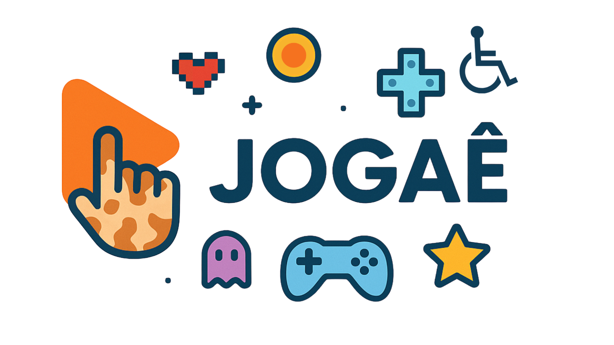

JOGAÊ: Jogos Acessíveis e Educativos
Um projeto de ensino e pesquisa sobre inclusão digital por meio de jogos
O projeto JOGAÊ: Jogos Acessíveis e Educativos tem como objetivo promover a inclusão digital e a conscientização sobre acessibilidade por meio do desenvolvimento de jogos acessíveis. A iniciativa envolve estudantes do ensino médio técnico do COLTEC/UFMG em atividades práticas de design, programação e avaliação de jogos digitais com foco em acessibilidade.
Objetivos
- Promover a acessibilidade e a inclusão digital por meio de jogos;
- Desenvolver competências técnicas e sensibilidade social em design inclusivo;
- Explorar o potencial dos jogos como ferramentas de reflexão e aprendizagem.
Resultados e Impactos
Os jogos desenvolvidos no âmbito do JOGAÊ têm sido apresentados em eventos acadêmicos e científicos, incluindo o Simpósio Brasileiro de Jogos e Entretenimento Digital (SBGames). Os estudantes participantes são incentivados a pensar criticamente sobre acessibilidade e a aplicar seus conceitos no desenvolvimento de soluções tecnológicas.
Repositório dos Trabalhos
💻 Repositório GitHub
O repositório dos trabalhos desde 2020 pode ser encontrado aqui (abre em nova aba) .
Galeria de Eventos e Apresentações
Publicações dos Alunos
- CARVALHO, R. I.; FANTINI, L.; VIEIRA, R. e S.; MOTA, V. F. Unnamed Game about Cats and Dungeons: Um jogo infinite runner sobre lidar com a ansiedade. In: Simpósio Brasileiro de Jogos e Entretenimento Digital (SBGames), 2024, Manaus.
- TOSTES, J. R. W.; MEMBRIVE, G. N. L.; ALVES, H. A. F.; REZENDE, G. D. S.; RAMOS, M.; CABRAL, J. P.; VIEIRA, R. e S.; MOTA, V. F. Antena 2: Glória a Invicta ou abaixo o Governo? In: SBGames, 2024, Manaus.
- JESUS, M. T. O. G.; SANTARELLI, B. M. M.; SOARES, J. G. D.; PESSOA, I. V.; VIEIRA, R. e S.; MOTA, V. F. Rato: uma viagem sobre a natureza humana. In: SBGames, 2024, Manaus.
- LEAO, N. M.; NOGUEIRA, V. M.; VENTURA, S. C. P.; ASSIS, M. E. L.; RIBEIRO, S. C.; DURAES, N. C. C.; VIEIRA, R. e S.; MOTA, V. F. Darkest School: sobrevivendo a uma noite na escola. In: SBGames, 2024, Manaus.
- OLIVEIRA, S. E. S.; ARANTES, A.; MOTA, V.F. My Garden of Emotions: Game for Understanding Facial Expressions for Autistic Children and Adolescents. INTERACCOES, v.18, p.5-22, 2022.
- PEIXOTO, A.; SILVA, G.; SARMIENTO, J.; ROSA, U.; MOTA, V.F. 2222: An accessible game to promote environment protection awareness. In: JEDI, Short Papers, SBGames, 2022, Natal.
- PARREIRAS, E.; BEGNAMI, G.; VIOLANTE, G.; CORDEIRO, A.; MOTA, V.F. Enem Runner: um jogo de corrida infinita acessível a deficientes visuais. In: SBGames, 2022, Natal.
- VALADARES, L.; BERNARDES, E.; GONCALVES, J.; RODRIGUES, L.; MOTA, V.F. Upwards! Um jogo acessível que incentiva inclusão através da competição. In: SBGames, 2022, Natal.
- OLIVEIRA, S. E. S.; ARANTES, A.; MOTA, V.F. Meu Jardim de Emoções: jogo para compreensão de expressões faciais para crianças e adolescentes autistas. In: SBGames, 2021, Gramado.